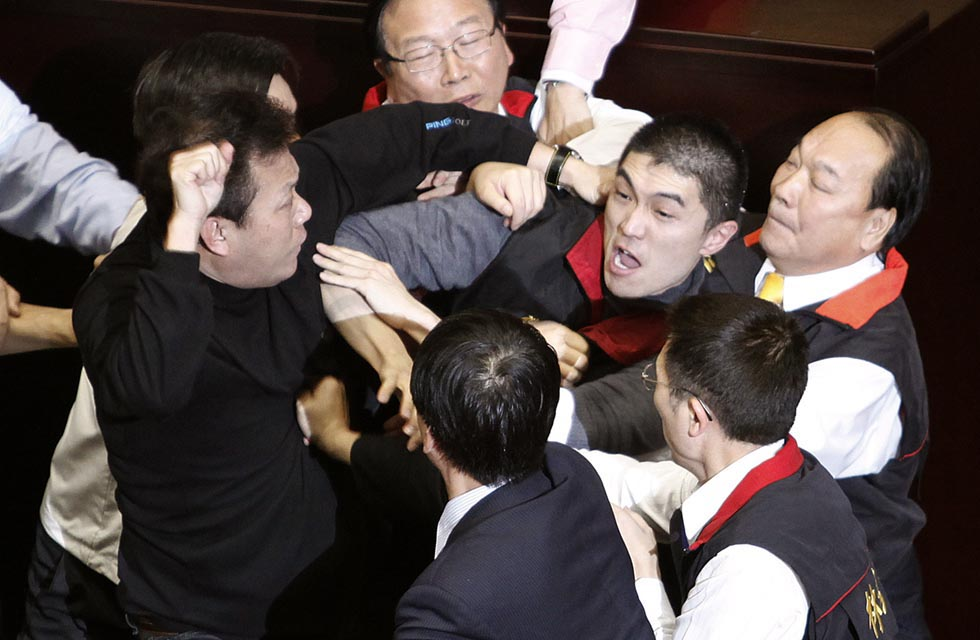

photo credit：Reuters
朱高正認為，國會在民主政治中應該扮演什麼角色，除了憲法所規定的職權之外，最重要的莫過於立法院代表國民的意志。
「立法院其實就相當於一般民主國家所謂的國會。那國會啊，它應該就是代表這個人民的意志。國會最重要的功能就是在審查法案、審查預算，監督政府，當然其他包括跟國外簽訂條約、宣戰、講和等等。只要涉及到人民重大利益，通通都要在國會做決定。所以說這個國會照理來講應該是代表國民的意志，也是國民意志形成最重要的地方。」如同上憲法課般，朱高正詳細地解釋。
雖然憲法已明確規範立法院的職權，但朱高正在1986年第一次參選增額立法委員時，「那時候的國會根本沒有國會的功能，它只不過是當國民黨正當性的一個道具而已」，朱高正說的很直白，「也就是說國民黨從大陸撤退到台灣來，它憑什麼在這個地方擁有統治的正當性？他們就說這是道統啊、法統。」
於是，原本就已經在立法院外所展開的黨外民主運動，在朱高正等黨外勢力集結成為民進黨並進入立法院後，「新與舊」、「民主與專制」之間的衝突隨之而來，國會改革就此展開。
「我剛進立法院的時候，我覺得非常有意思。在我報到的時候，很多人就提醒我說，見到這些老委員的時候絕對不能稱他們為老委員。」朱高正回憶，「這樣他們會很不高興，一定要尊稱他們為資深委員。」
朱高正利用他在立法院的第一次非正式發言，公開挑戰這個過去被視為不可挑戰的殿堂。
「我記得那個是民國76年的2月初，應該是2月初吧！」朱高正記得很清楚。
朱高正利用沒有法律約束力的「談話會」第一次上台發言，一開口就語出驚人：「各位老委員，我知道你們聽到這個稱呼心裡很不舒服。因為本席來本院報到的時候，已經被很多人提醒過好多次了，一定要我們這些增額的立法委員尊稱你們為資深委員。但其實我要在這裡要告訴大家，我只能稱呼你們為老委員，我不能稱呼你們為資深委員。為什麼？」
朱高正不客氣地繼續講下去：「因為你們是中華民國第一屆立法委員，本席也是中華民國第一屆立法委員，大家同樣都是第一屆立法委員，何來資深之有？當然我知道你們現在心裡在嘀咕，說『臭小子，我當你爺爺當你奶奶都還當得過去』。我說沒錯，當你1948年在南京就職中華民國第一任立法委員的時候啊，本席還沒投胎咧。那奇怪，怎麼相隔兩代的人現在竟然變成立法院的同事呢？我告訴你這就是國民黨政權荒謬的本質所在。」
「我一講到這裡，他們就跳起來啦！」朱高正生動地描述著。「我就跟他們講，按照中華民國憲法，立法委員是每三年要改選一次。（自第七屆立法委員開始依憲法增修條文第四條改為四年）但你們無恥之極，利用國民代表大會不斷修改憲法，讓你們按照現在的《動員戡亂時期臨時條款》，你們可以當到反攻大陸為止，要當到你們原來的選區選出新的立法委員，你們的任期才算屆滿。這不是擺明你們要幹到死嗎？」朱高正毫不留情面地在滿場的資深立委面前，把這一大段話說完。
「立法院基本上就是國民黨的遮羞布，或者是行政院的橡皮圖章而已，它根本不能代表納稅人的意願。」
「立法院那時候被我形容成是一間破敗的山神廟，根本沒有人去那邊上香啦！」朱高正雙手一攤笑著說。
1980年代乃至之前的立法院，死氣沈沈如同林濁水所形容的「行政院立法局」，院前廣場既看不到民眾陳情，更沒有今日的抗爭遊行。朱高正口中「破敗的山神廟」既傳神又諷刺，和今日的立法院相比判若雲泥。
「但被我翻江倒海半年之後啊，立法院變成香火鼎盛，為什麼？任何不滿、任何陳情全部都跑到立法院來啦！倒過來講，你國民黨行政院通過的議案送到立法院來，不一定過的。」朱高正笑著說。
法案送到立法院，基本上就是照章行事三讀通過，審查只是徒具形式。「以前國民黨中常會做的決定，行政院就是照辦，立法院只是行政院的橡皮圖章而已。」朱高正說。
如果國會不全面改選，體制沒有改變，立法院將只是徒具形式的橡皮圖章，無法展現國民的意志，更遑論監督。因此，從民進黨正式成立並進入立法院形成一股新力量後，猶如注入汽油般點燃立法院。於是1987年便成為立法院史上最為翻騰，抗爭最為激烈，但也是問政最精采的時期。
「在我進去立法院最激烈的就是民國76年的2月底到7月中，就是解除戒嚴這段期間啦。」
「這大概有五個月不到，立法院可以說是脫胎換骨。從原來國民黨的御用工具，漸漸地成為匯聚民意、表達民意，而且真正能夠成為監督政府、能夠審查法案、能夠審查預算的一個正常的國會功能。就是從這裡開始的。」朱高正說。
在國會全面改選的過程當中，朱高正並不是唯一的參與者，但若要說開啟改革的契機，最關鍵也最戲劇化的莫過於朱高正跳上主席台進行杯葛這一幕。這一跳，讓僵化了將近40年的立法院，就此扣下改革的扳機。
1987年5月30日，立法院審查1988年度總預算，因為程序問題，就此引爆立法院史上第一次朝野衝突（請使用IE開啟）。
「我跳上主席台，其實也不過只有跳兩次。第一次是在民國76年5月底，嚴格講是5月30號。幹嘛呢？那一次是在立法院，在今天群賢樓的頂樓，那一天是召開預算審查會。那一次是立法院預算委員會，審查到快接近尾聲的時候。」談起這段將近30年前的往事，朱高正記憶仍然清晰。
事發當天，國民黨兩位少壯派委員李勝峰和趙少康提出臨時動議案，想要繞過立法院預算審查程序，不讓個別的委員會委員，有機會再聯席會議中對於算發表意見或審查。
「那一天晚上我們辯論到快10點。我三次上去講，我記得三次上台講完之後，尤清說啊，你講得這個旁徵博引，就像德國聯邦憲法法院的判決書一樣。」然而朱高正講的再引經據典也沒有用，最後國民黨決定要將預算強行表決。
「那時候，尤清就來找我，說這樣吧，待會如果國民黨要強行表決的話，我來佔領右邊的發言台，另外一個從歐洲留學回來的王義雄博士佔領左邊的發言台，主席台的麥克風你負責去搶下。」朱高正回憶。
三人講好準備在國民黨強行表決的時候，搶下左右兩邊以及中間的麥克風阻擋表決。結果左右兩邊的麥克風搶到了，但因為中間的麥克風有三隻，朱高正沒搶到最中間一支，「我搶到兩根一根漏了。那個主席台大概有十公尺長，寬有兩公尺，我要繞過去已經太晚了。只要主席，那時候主席是梁許春菊，她說同意的舉手，（總預算案）這樣就通過了。」
「我來不及，只好一步踏上去搶，這就是我踏上主席台的原因。」
「當然結果國民黨還是強行表決通過，說他們已經通過了。」朱高正說。
在戒嚴時期的立法院跳上不可侵犯的主席台杯葛議事進行，這是多麼震撼和不可思議的畫面。透過當時少數的電視與平面媒體，這一幕衝擊了所有國人，以及國民黨。
「那一天國民黨就把我當刑事犯偵查。」朱高正說。
衝突後第二天早上，資深立委同時也是國民黨中央委員會秘書長的馬樹禮，到立法院找朱高正傳達總統蔣經國的想法，希望可以讓總預算案的爭議落幕。
「朱委員你昨天的發言，經國先生聽了兩次，聽到晚上一點多，他說朱委員講的也不是沒道理，所以要我來跟你講。因為憲法規定預算要在5月31號以前通過，今天是最後一天。總統有交代，你要刪什麼盡量按照你的意思，明年一定照你提的一定要合憲化、民主化、合理化來編列預算。」朱高正引述馬樹禮當時對他說的話。
朱高正抗爭的導火線就是這三個原則（合憲化、民主化、合理化）。朱高正認為，憲法第164條已明文規定中央政府的總支出有關教育、科學、文化的部份不得低於15%，但總預算卻沒有編到百分之15，明顯違憲。民主化的部份，朱高正認為預算當中太多黨庫通國庫的部分，國民黨不能有特權。合理化則是政府不能只照顧軍公教，也應該對「勞工、榮民，尤其這些殘障、低收入戶應該多一些照顧」，朱高正說。
朱高正答應馬樹禮，若蔣經國總統可以做到這三點，「我尊重各個審查委員會的報告，不提另外刪減的要求，只要總統真答應明年預算編定要按照合憲化、合理化還有民主化這三個要求來編的話。」
但隔年一月蔣經國總統去世，前一年他對朱高正的承諾並沒有兌現，於是1988年4月7日，朱高正再次因為預算案跳上主席台（請使用IE開啟），並拉扯當時的院長劉闊才，揮出立法院第一拳。
「你國民黨自己都已經承認預算是違憲的，有關違憲的議案，國會沒有資格表決的啦！為了這個我第二次跳上主席台。」朱高正說起此事，語氣仍是十足豪邁、洪亮。
「講白一點，我兩次跳上主席台都是為了抗議國民黨所編的預算違反憲法164條，也就是教育、科學、文化之經費不得低於中央政府年度總支出的百分之15的規定。這就是我要跳上主席台的原因，我也不是發神經病不然幹嘛要去跳主席台？這是不得已，大勢所趨，該怎麼做就得怎麼做。」朱高正說。
經由朱高正兩次跳上主席台的「暴力問政」，以及期間大大小小的抗爭與肢體肉搏，朱高正就此贏得「台灣第一民主戰艦」與「國會戰神」的稱號。隨後立法院通過資深立委退職條例，並且在1991年12月31日，所有資深立委退職，立法院正式進入全民直選的第二屆，達成國會全面改選的歷史一頁。
那段在立法院幹架的日子｜朱高正：當時的立法院，基本是就是國民黨的遮羞布
採訪：關鍵評論網 吳承紘
近年已經逐漸淡出台灣政壇的朱高正，雖然活躍的舞台已經轉移到中國，但談起國會改革這段歷史，仍是擲地有聲。
朱高正認為，國會在民主政治中應該扮演什麼角色，除了憲法所規定的職權之外，最重要的莫過於立法院代表國民的意志。
立法院是體現國民意志的地方
「立法院其實就相當於一般民主國家所謂的國會。那國會啊，它應該就是代表這個人民的意志。國會最重要的功能就是在審查法案、審查預算，監督政府，當然其他包括跟國外簽訂條約、宣戰、講和等等。只要涉及到人民重大利益，通通都要在國會做決定。所以說這個國會照理來講應該是代表國民的意志，也是國民意志形成最重要的地方。」如同上憲法課般，朱高正詳細地解釋。
雖然憲法已明確規範立法院的職權，但朱高正在1986年第一次參選增額立法委員時，「那時候的國會根本沒有國會的功能，它只不過是當國民黨正當性的一個道具而已」，朱高正說的很直白，「也就是說國民黨從大陸撤退到台灣來，它憑什麼在這個地方擁有統治的正當性？他們就說這是道統啊、法統。」
於是，原本就已經在立法院外所展開的黨外民主運動，在朱高正等黨外勢力集結成為民進黨並進入立法院後，「新與舊」、「民主與專制」之間的衝突隨之而來，國會改革就此展開。
黨國破敗的山神廟
「我剛進立法院的時候，我覺得非常有意思。在我報到的時候，很多人就提醒我說，見到這些老委員的時候絕對不能稱他們為老委員。」朱高正回憶，「這樣他們會很不高興，一定要尊稱他們為資深委員。」
朱高正利用他在立法院的第一次非正式發言，公開挑戰這個過去被視為不可挑戰的殿堂。
「我記得那個是民國76年的2月初，應該是2月初吧！」朱高正記得很清楚。
朱高正利用沒有法律約束力的「談話會」第一次上台發言，一開口就語出驚人：「各位老委員，我知道你們聽到這個稱呼心裡很不舒服。因為本席來本院報到的時候，已經被很多人提醒過好多次了，一定要我們這些增額的立法委員尊稱你們為資深委員。但其實我要在這裡要告訴大家，我只能稱呼你們為老委員，我不能稱呼你們為資深委員。為什麼？」
朱高正不客氣地繼續講下去：「因為你們是中華民國第一屆立法委員，本席也是中華民國第一屆立法委員，大家同樣都是第一屆立法委員，何來資深之有？當然我知道你們現在心裡在嘀咕，說『臭小子，我當你爺爺當你奶奶都還當得過去』。我說沒錯，當你1948年在南京就職中華民國第一任立法委員的時候啊，本席還沒投胎咧。那奇怪，怎麼相隔兩代的人現在竟然變成立法院的同事呢？我告訴你這就是國民黨政權荒謬的本質所在。」
「我一講到這裡，他們就跳起來啦！」朱高正生動地描述著。「我就跟他們講，按照中華民國憲法，立法委員是每三年要改選一次。（自第七屆立法委員開始依憲法增修條文第四條改為四年）但你們無恥之極，利用國民代表大會不斷修改憲法，讓你們按照現在的《動員戡亂時期臨時條款》，你們可以當到反攻大陸為止，要當到你們原來的選區選出新的立法委員，你們的任期才算屆滿。這不是擺明你們要幹到死嗎？」朱高正毫不留情面地在滿場的資深立委面前，把這一大段話說完。
「立法院基本上就是國民黨的遮羞布，或者是行政院的橡皮圖章而已，它根本不能代表納稅人的意願。」
「立法院那時候被我形容成是一間破敗的山神廟，根本沒有人去那邊上香啦！」朱高正雙手一攤笑著說。
從破敗的山神廟到香火鼎盛
1980年代乃至之前的立法院，死氣沈沈如同林濁水所形容的「行政院立法局」，院前廣場既看不到民眾陳情，更沒有今日的抗爭遊行。朱高正口中「破敗的山神廟」既傳神又諷刺，和今日的立法院相比判若雲泥。
「但被我翻江倒海半年之後啊，立法院變成香火鼎盛，為什麼？任何不滿、任何陳情全部都跑到立法院來啦！倒過來講，你國民黨行政院通過的議案送到立法院來，不一定過的。」朱高正笑著說。
法案送到立法院，基本上就是照章行事三讀通過，審查只是徒具形式。「以前國民黨中常會做的決定，行政院就是照辦，立法院只是行政院的橡皮圖章而已。」朱高正說。
如果國會不全面改選，體制沒有改變，立法院將只是徒具形式的橡皮圖章，無法展現國民的意志，更遑論監督。因此，從民進黨正式成立並進入立法院形成一股新力量後，猶如注入汽油般點燃立法院。於是1987年便成為立法院史上最為翻騰，抗爭最為激烈，但也是問政最精采的時期。
「在我進去立法院最激烈的就是民國76年的2月底到7月中，就是解除戒嚴這段期間啦。」
「這大概有五個月不到，立法院可以說是脫胎換骨。從原來國民黨的御用工具，漸漸地成為匯聚民意、表達民意，而且真正能夠成為監督政府、能夠審查法案、能夠審查預算的一個正常的國會功能。就是從這裡開始的。」朱高正說。
史上第一次跳主席台
在國會全面改選的過程當中，朱高正並不是唯一的參與者，但若要說開啟改革的契機，最關鍵也最戲劇化的莫過於朱高正跳上主席台進行杯葛這一幕。這一跳，讓僵化了將近40年的立法院，就此扣下改革的扳機。
1987年5月30日，立法院審查1988年度總預算，因為程序問題，就此引爆立法院史上第一次朝野衝突（請使用IE開啟）。
「我跳上主席台，其實也不過只有跳兩次。第一次是在民國76年5月底，嚴格講是5月30號。幹嘛呢？那一次是在立法院，在今天群賢樓的頂樓，那一天是召開預算審查會。那一次是立法院預算委員會，審查到快接近尾聲的時候。」談起這段將近30年前的往事，朱高正記憶仍然清晰。
事發當天，國民黨兩位少壯派委員李勝峰和趙少康提出臨時動議案，想要繞過立法院預算審查程序，不讓個別的委員會委員，有機會再聯席會議中對於算發表意見或審查。
「那一天晚上我們辯論到快10點。我三次上去講，我記得三次上台講完之後，尤清說啊，你講得這個旁徵博引，就像德國聯邦憲法法院的判決書一樣。」然而朱高正講的再引經據典也沒有用，最後國民黨決定要將預算強行表決。
「那時候，尤清就來找我，說這樣吧，待會如果國民黨要強行表決的話，我來佔領右邊的發言台，另外一個從歐洲留學回來的王義雄博士佔領左邊的發言台，主席台的麥克風你負責去搶下。」朱高正回憶。
三人講好準備在國民黨強行表決的時候，搶下左右兩邊以及中間的麥克風阻擋表決。結果左右兩邊的麥克風搶到了，但因為中間的麥克風有三隻，朱高正沒搶到最中間一支，「我搶到兩根一根漏了。那個主席台大概有十公尺長，寬有兩公尺，我要繞過去已經太晚了。只要主席，那時候主席是梁許春菊，她說同意的舉手，（總預算案）這樣就通過了。」
「我來不及，只好一步踏上去搶，這就是我踏上主席台的原因。」
「當然結果國民黨還是強行表決通過，說他們已經通過了。」朱高正說。
在戒嚴時期的立法院跳上不可侵犯的主席台杯葛議事進行，這是多麼震撼和不可思議的畫面。透過當時少數的電視與平面媒體，這一幕衝擊了所有國人，以及國民黨。
「那一天國民黨就把我當刑事犯偵查。」朱高正說。
預算案違憲，朱高正二跳主席台
衝突後第二天早上，資深立委同時也是國民黨中央委員會秘書長的馬樹禮，到立法院找朱高正傳達總統蔣經國的想法，希望可以讓總預算案的爭議落幕。
「朱委員你昨天的發言，經國先生聽了兩次，聽到晚上一點多，他說朱委員講的也不是沒道理，所以要我來跟你講。因為憲法規定預算要在5月31號以前通過，今天是最後一天。總統有交代，你要刪什麼盡量按照你的意思，明年一定照你提的一定要合憲化、民主化、合理化來編列預算。」朱高正引述馬樹禮當時對他說的話。
朱高正抗爭的導火線就是這三個原則（合憲化、民主化、合理化）。朱高正認為，憲法第164條已明文規定中央政府的總支出有關教育、科學、文化的部份不得低於15%，但總預算卻沒有編到百分之15，明顯違憲。民主化的部份，朱高正認為預算當中太多黨庫通國庫的部分，國民黨不能有特權。合理化則是政府不能只照顧軍公教，也應該對「勞工、榮民，尤其這些殘障、低收入戶應該多一些照顧」，朱高正說。
朱高正答應馬樹禮，若蔣經國總統可以做到這三點，「我尊重各個審查委員會的報告，不提另外刪減的要求，只要總統真答應明年預算編定要按照合憲化、合理化還有民主化這三個要求來編的話。」
但隔年一月蔣經國總統去世，前一年他對朱高正的承諾並沒有兌現，於是1988年4月7日，朱高正再次因為預算案跳上主席台（請使用IE開啟），並拉扯當時的院長劉闊才，揮出立法院第一拳。
「你國民黨自己都已經承認預算是違憲的，有關違憲的議案，國會沒有資格表決的啦！為了這個我第二次跳上主席台。」朱高正說起此事，語氣仍是十足豪邁、洪亮。
「講白一點，我兩次跳上主席台都是為了抗議國民黨所編的預算違反憲法164條，也就是教育、科學、文化之經費不得低於中央政府年度總支出的百分之15的規定。這就是我要跳上主席台的原因，我也不是發神經病不然幹嘛要去跳主席台？這是不得已，大勢所趨，該怎麼做就得怎麼做。」朱高正說。
經由朱高正兩次跳上主席台的「暴力問政」，以及期間大大小小的抗爭與肢體肉搏，朱高正就此贏得「台灣第一民主戰艦」與「國會戰神」的稱號。隨後立法院通過資深立委退職條例，並且在1991年12月31日，所有資深立委退職，立法院正式進入全民直選的第二屆，達成國會全面改選的歷史一頁。
核稿編輯：楊之瑜
SHARE：